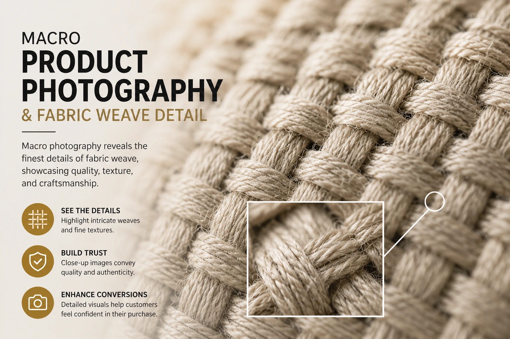

Using High-Texture Close-Up Photography to Lower Online Product Returns
The Return Problem That Better Product Copy Cannot Solve
Indian e-commerce return rates in textile, jewellery, and home goods categories remain among the highest across all product segments — and the primary driver is not shipping damage, size miscalculation, or buyer's remorse. It is texture mismatch: the product looks or feels different from what the buyer expected based on the listing image. A Kanjivaram saree that photographed as deeply lustrous silk arrives feeling lighter and less dense than the image suggested. A leather bag that appeared smooth and substantial in the listing feels stiff and slightly rough to the touch. A home goods ceramic that looked smooth and refined in the photograph has a surface variation that the buyer did not anticipate.
None of these mismatches represent a product quality failure. They represent a visual communication failure — a gap between the tactile reality of the product and the visual information available to the buyer before purchase. And that gap is closed by high-texture product photography: the discipline of photographing the surface character, material structure, and tactile qualities of a product in close-up detail, at sufficient resolution to allow the buyer a simulated tactile examination before committing to a purchase.
This guide covers exactly how high-texture product photography, macro product photography shots, fabric weave photography, and detailing fabric and jewelry textures work — and how to integrate them into a complete Shopify visual optimization strategy that reduces returns while improving conversion.
The Science of Visual Texture Perception in E-commerce
The brain does not process texture exclusively through touch — it processes it visually as well. High-resolution images of textured surfaces activate the somatosensory cortex — the brain region responsible for processing touch sensations — even when the image is viewed on a screen without any physical contact. This neural mechanism is the commercial foundation of high-texture product photography: images that reveal surface texture in sufficient detail produce a simulated tactile experience that sets accurate material expectations before purchase.
When a buyer views a high-resolution image of a handwoven Kanjivaram silk's zari border — seeing individual gold threads, their interlacement with the silk warp, the slight variation in surface height that distinguishes hand-woven from machine-made — their brain generates a haptic prediction: what this fabric will feel like when touched. If that prediction is accurate — if the product arrives matching the tactile expectation set by the image — satisfaction is high and the return rate is low. If the image did not provide sufficient texture information for the brain to generate an accurate haptic prediction, the mismatch between prediction and reality drives dissatisfaction and returns.
High-texture product photography is the production investment that makes the haptic prediction accurate — reducing the gap between visual expectation and tactile reality, and with it, the return rate that erodes margin across India's most texture- sensitive product categories.
Accurate Haptic Prediction
High-resolution texture images allow the buyer's brain to form an accurate prediction of how the product will feel before purchase — matching the actual tactile experience on receipt and dramatically reducing texture-mismatch returns.
Quality Signal Communication
A macro image of a textile weave, leather grain, or jewellery stone setting communicates craftsmanship quality at a level of detail that no product description can match — directly justifying the price premium of handcrafted and premium materials.
Purchase Confidence Building
Buyers who have examined a product's texture in sufficient detail before purchasing arrive at the purchase decision with confidence rather than hesitation — which produces higher completion rates on the checkout and lower post-purchase doubt that leads to impulse returns.
Competitive Differentiation
In product categories where most sellers use standard white background hero images alone, a listing that includes high-texture close-up images communicates a visual quality standard that differentiates the brand before any other comparison — price, reviews, or shipping — is made.

Fabric Weave Photography: The Specialist Technique for Textile Sellers
Fabric weave photography is the most commercially significant subset of high-texture product photography for Indian e-commerce — because India's most commercially significant textile categories (Kanjivaram silk, handloom cotton, block-print fabrics, chanderi, banarasi) are differentiated primarily by their weave quality, and that quality is invisible in standard product photography.
The specific technical approach for effective fabric weave photography:
- Magnification level matched to the weave structure. Different weave types require different magnification levels to reveal their quality signals. A dense Kanjivaram silk with a count of 80 to 100 threads per centimetre requires significantly higher magnification than a coarser handloom cotton to reveal individual thread structure. The photographer must determine the magnification level that shows the weave clearly rather than resolving into abstraction — typically between 1:2 and 2:1 macro ratio for most Indian textiles.
- Raking light for surface dimension. The most revealing illumination for fabric weave photography uses raking light — a diffused light source positioned at a low angle (15 to 25 degrees from the fabric surface) — which grazes across the weave and creates micro-shadows in the recesses between threads, making the three-dimensional structure of the weave visible in the two-dimensional image. This is the lighting technique that distinguishes professional fabric weave photography from a high-resolution close-up taken with standard overhead studio lighting.
- Tension and flatness control. Fabric photographed with uneven tension — a slight fold or pucker at the macro scale — produces a distorted representation of the weave structure that suggests inconsistency in the thread count. Professional fabric weave photography uses a flat mounting system — typically a glass plate or a tensioned frame — to maintain perfectly even surface flatness across the area being photographed.
- Multiple weave locations per fabric. A single close-up of a fabric's weave is not sufficient documentation for a premium textile. Professional documentation captures the weave in the body of the fabric, at the border transition, at any zari or embellishment element, and at any area where the weave structure changes. For sarees, this means separate texture images of the body, the border, and the pallu — the three distinct structural zones that a buyer evaluates when assessing a saree's quality.
Detailing Fabric and Jewelry Textures: Category-Specific Technical Requirements
Detailing fabric and jewelry textures requires category-specific technical approaches — because the texture elements that communicate quality differ significantly between material types, and the lighting, magnification, and composition approaches that reveal these elements must be calibrated accordingly.
The category-specific approach for detailing fabric and jewelry textures:
Silk and Woven Textiles
- Magnification: 1:2 to 2:1 macro ratio to reveal individual thread structure
- Lighting: Low-angle raking light from a single diffused source at 20 degrees
- Key elements: Thread count density, zari interlacement, weave evenness
- Avoid: Overhead lighting that flattens surface dimension and hides weave structure
Jewellery and Metalwork
- Magnification: 1:1 to 3:1 macro ratio depending on setting and detail scale
- Lighting: Multi-point diffused setup to prevent specular hot spots on metal
- Key elements: Stone clarity and setting precision, metalwork finish, joint quality
- Avoid: Single-point lighting that creates uncontrolled reflections on polished metal
Leather and Synthetic Materials
- Magnification: 1:3 to 1:1 macro ratio to reveal grain pattern and surface character
- Lighting: Low-angle raking light that reveals grain texture without causing hot spots
- Key elements: Grain pattern confirming genuine leather, surface finish uniformity, stitching thread quality
- Avoid: Overhead lighting that flattens leather grain and makes genuine and synthetic materials appear identical
For home goods and ceramics, the texture elements that communicate quality include glaze depth and variation (visible in directional light as subtle shifts in colour and sheen across the surface), surface texture character (whether the material reads as smooth, matte, or textured), and any handmade variation that distinguishes artisanal from mass-produced. These elements require a lighting setup that creates enough directional quality to reveal surface variation without the harsh contrast that suggests defect rather than character.
High-Resolution Catalog Shoots: Integrating Texture Photography Into the Full Asset Set
High-resolution catalog shoots that incorporate systematic texture photography alongside standard hero and lifestyle images produce a complete visual asset set that serves both conversion and return reduction simultaneously. The most efficient production approach integrates texture photography into the same shoot day as the standard catalog images — sharing lighting infrastructure, background setups, and post-production workflow — rather than commissioning texture photography as a separate production.
The shot sequence for high-resolution catalog shoots with integrated texture photography:
- Shot 1: Hero image. White background, product fills 85% of frame, perfect technical execution. The listing thumbnail that earns the click. Shot with standard macro-free setup at full product scale.
- Shot 2: Key alternative angle. The second most important view of the full product — the back of a garment, the interior of a bag, the bottom of a ceramic, the clasp of a jewellery piece. Shot at the same scale as the hero.
- Shot 3: Primary texture close-up. The highest-priority texture element for this product category — the weave of the textile's body, the grain of the leather, the stone setting of the jewellery. Shot with raking light and macro lens. This is the image that communicates quality at the level of craft.
- Shot 4: Secondary texture or detail close-up. The second priority texture or construction detail — the border of the saree, the stitching of the bag handle, the clasp mechanism of the jewellery. Shot with the same macro setup, potentially with adjusted lighting angle for the different surface character.
- Shot 5: Lifestyle or in-use image. The product in context — worn, placed, or used in a lifestyle setting. Shot with standard setup, no macro required.
- Shot 6: Scale reference. The product alongside a scale reference that communicates its actual dimensions — a hand, a familiar object, or an annotated dimension graphic. Shot with standard setup.
Building Product Page Trust Through Texture Imagery
Building product page trust through high-texture imagery operates on a principle that is counterintuitive to many brand managers: showing more detail — including the micro-level imperfections that distinguish handcrafted from machine-made — builds more trust than hiding detail behind a perfectly smooth hero image.
A buyer who can see the slight variation in thread tension that distinguishes a genuine handloom fabric from a machine-produced imitation is a buyer who trusts that the product is what it claims to be. A buyer who can examine the setting of a stone in a piece of jewellery and see the precision of the prong work is a buyer who trusts the metalsmith's craft. These micro-level quality signals — invisible in standard product photography and fully visible in macro texture shots — are the most powerful building product page trust tools available for Indian artisanal and premium product sellers.
The specific trust signals that texture photography communicates for each major category:
- Textiles: Thread count density confirming quality grade, evenness of weave confirming skilled craftsmanship, zari thread quality and interlacement confirming authentic handwork rather than embellishment printing
- Jewellery: Stone clarity and table cut visible in close-up, prong setting precision indicating skilled metalwork, surface finish consistency confirming quality polishing rather than mass finishing
- Leather goods: Genuine grain pattern visible in surface texture (synthetic leather does not replicate natural grain variability), stitching thread uniformity and needle hole precision, edge finishing method visible in close-up
- Ceramics and home goods: Glaze depth and character showing handmade application variation that distinguishes artisanal from industrial, surface texture character that matches the claimed material specification, joint and construction precision visible in structural close-ups
Shopify Visual Optimization: Technical Delivery for Texture Images
Shopify visual optimization for high-texture images requires specific technical delivery standards that differ from standard product photography — because the commercial value of texture imagery depends entirely on the resolution available to the buyer through Shopify's zoom function.
The complete Shopify visual optimization checklist for texture images:
- Upload at maximum capture resolution. High-texture images should be uploaded to Shopify at the maximum resolution delivered by the camera — typically 4000 to 8000 pixels on the long edge for a mirrorless or DSLR camera at macro distance. Shopify's zoom function uses the full resolution of the uploaded image; uploading at reduced resolution eliminates the zoom quality advantage that justifies the texture photography investment.
- Use WebP format for web delivery, retain TIFF or RAW masters. Export WebP versions for Shopify upload — WebP provides the smallest file size at equivalent quality. Retain the original uncompressed files (TIFF or high-quality JPEG) as masters for any future print or marketing use.
- Target under 250KB per texture image for Shopify upload. High-resolution texture images delivered at full camera resolution without compression optimisation are typically 5 to 20MB — which will cause the zoom function to load slowly on mobile connections. Professional post-production compression targeting under 250KB at full Shopify zoom resolution maintains image quality while delivering acceptable load speed on Indian mobile networks.
- Write descriptive alt text for every texture image. The alt text for a texture image should describe specifically what is shown: "Close-up of Kanjivaram silk weave showing zari gold thread interlacement with silk warp, 80 count density" is more valuable for SEO and accessibility than "product detail." Descriptive alt text on texture images earns Google Image Search visibility for the specific quality terms buyers use when searching for premium versions of the product category.
- Confirm zoom is enabled for all product galleries. Shopify's product image zoom function must be enabled in the theme settings for the zoom quality of high-resolution texture images to be accessible to buyers. Confirm the zoom function is active and working correctly on mobile as well as desktop — most Indian buyers access product pages on mobile, and mobile zoom behaviour differs from desktop in some Shopify themes.
-
Use lazy loading for texture images, eager loading for the hero.
The hero image should load immediately with
loading="eager"andfetchpriority="high"for fast initial page render. Gallery images — including texture shots — should useloading="lazy"to defer loading until the buyer scrolls to them, improving the page's Core Web Vitals score and the overall mobile load time.
The Return Rate ROI of High-Texture Photography Investment
The commercial case for high-texture product photography investment is most clearly expressed as a return rate ROI calculation. For a brand processing 300 orders per month in a textile category with a 20% return rate — where a significant portion of returns are driven by texture or material mismatch — a 5 percentage point reduction in return rate (from 20% to 15%) saves 15 returns per month.
Each return typically costs the brand the round-trip shipping expense, the repackaging labour, the quality inspection cost, and the margin lost on any item that cannot be resold at full price. For a mid-premium saree brand, this per-return cost is typically between ₹250 and ₹600. Fifteen fewer returns per month at ₹400 average cost saves ₹6,000 per month — ₹72,000 per year — from a single product category.
The additional benefit — not captured in the return rate ROI — is the conversion rate improvement that high-texture imagery produces on the same product pages. Buyers who can examine the product's texture in sufficient detail before purchasing convert at a higher rate than those who cannot — because the visual examination resolves the hesitation that causes cart abandonment. The combined effect of higher conversion and lower return rate on the same visual investment produces an ROI that makes high-texture product photography one of the most commercially efficient production investments available to Indian e-commerce brands.
Conclusion
High-texture product photography, macro product photography shots, fabric weave photography, and systematic detailing fabric and jewelry textures in high-resolution catalog shoots are not luxury additions to a standard product photography strategy. For Indian e-commerce brands selling in categories where tactile quality is the primary purchase driver — textiles, jewellery, leather goods, home goods — they are the most commercially direct route to reducing product returns while simultaneously improving conversion and building product page trust.
Every texture-based return is a visual communication failure that could have been prevented. And every buyer who can examine a product's texture in sufficient detail before purchasing and still chooses to buy is a buyer who arrives at the purchase with accurate expectations — and who is significantly more likely to become a repeat customer.
At The PhD Ads, we produce high-texture product photography and high-resolution catalog shoots for Indian e-commerce brands — macro textile and jewellery texture documentation, systematic fabric weave photography, and complete Shopify visual optimization delivery built for the product categories where tactile quality is the commercial differentiator.
Key Topics
Ready to Lower Your Return Rate with High-Texture Photography?
At The PhD Ads, we specialise in high-texture product photography and high-resolution catalog shoots for Indian e-commerce brands — macro fabric weave photography, jewellery texture documentation, and complete Shopify visual optimization built to reduce returns and build product page trust that converts.
Email: team@e2o.in